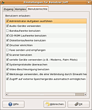
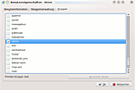

Wiki
Mitmachen
- Wikiartikel anlegen
- Howto anlegen
- Wiki-Referenz
- Wiki-Syntax
- Baustellen
- Artikelideen
- Ungetestete Artikel
- Ausbaufähige Artikel
- Fehlerhafte Artikel
- Rund ums Wiki
Konfiguration
- Backlinks anzeigen
- Exportieren
Administrator
Dieser Artikel wurde für die folgenden Ubuntu-Versionen getestet:
Dieser Artikel ist größtenteils für alle Ubuntu-Versionen gültig.
Zum Verständnis dieses Artikels sind folgende Seiten hilfreich:
Der bei der Installation angelegte Benutzer verfügt über alle Privilegien, um das System zu administrieren, d.h. zu verwalten. Alle weiteren Benutzer haben zunächst keine besonderen Berechtigungen. Sie lassen sich jedoch bei Bedarf einfach zum potenziellen Administrator machen, indem sie in die Gruppe "sudo" hinzugefügt werden. Man sollte aber vorsichtig sein, wem man diese Rechte erteilt, schließlich darf dieser Benutzer dann alles auf dem System verändern und auch die Daten anderer Benutzer verändern.
Im Folgenden wird kurz beschrieben, wie ein Benutzer - der natürlich über administrative Rechte verfügen muss - einen anderen Benutzer Root-Rechte vergeben kann. Weitere Informationen zu Benutzern und Gruppen unter Linux finden sich hier.
Benutzer zu Administratoren machen¶
Unity¶
Unter Unity kann man einen Benutzer wie folgt zum Systemverwalter machen:
Im Menü "Systemeinstellungen -> Benutzer und Gruppen" zuerst auf "Entsperren" klicken und das Passwort (des aktuell angemeldeten Benutzers, welcher ebenfalls Systemverwalter sein muss) eingeben. Dann den gewünschten Benutzer in der Liste links auswählen, und das Feld "Kontentyp" von "Standard" auf "Systemverwalter" ändern. Danach noch auf "Sperren" klicken.
Auf die gleiche Weise kann man auch einen Systemverwalter zum normalen Benutzer machen.

GNOME¶
Unter GNOME kann man dies direkt über die Benutzerverwaltung machen. Man öffnet diese daher über
"System -> Systemverwaltung -> Benutzer und Gruppen"
und selektiert den entsprechenden Benutzer. Nun geht man zu "Eigenschaften" und von dort in den Reiter "Benutzerrechte" und aktiviert "System administrieren".
Von nun an kann dieser Benutzer administrative Aufgaben ausführen. Möchte man die Root-Rechte wieder entziehen, so deaktiviert man einfach diese Option wieder.
KDE Plasma¶

Unter KDE Plasma öffnet man die Benutzerverwaltung über
"K-Menü -> Anwendungen -> System -> Benutzerverwaltung KUser"
Alternativ kann die Anwendung auch durch Eingabe von "Benutzerverwaltung" in KRunner gestartet werden. Hier wählt man den entsprechenden Benutzer aus, und über "Bearbeiten" gelangt man in eine Maske, in der man umfangreiche Angaben zum Benutzer machen kann. Dort wählt man "Gruppen" aus und aktiviert die Gruppe "sudo".
Terminal¶
Natürlich kann man auch direkt aus der Konsole heraus einen Benutzer in die Administratorgruppe hinzufügen. Dies kann man mit dem Befehl
sudo adduser <benutzername> sudo
machen.
Notfall¶
Merkt man, dass man keine Programme der Systemverwaltung mehr öffnen kann und keine Befehle mehr per sudo mit Root-Rechten ausführen kann, so hat man wahrscheinlich seine Administratorrechte aus irgendeinem Grund verloren. Man kann dies mit dem Befehl
# Allgemein groups <benutzername> # Beispiel groups otto
otto : otto adm dialout fax cdrom floppy tape audio dip video plugdev lpadmin scanner sudo
überprüfen. groups listet alle Gruppen auf, in denen der Benutzer vertreten ist. Hier muss die Gruppe "sudo" auf jeden Fall erscheinen. Sollte dies nicht der Fall sein und sollte es keine weiteren Benutzer im System geben, die noch in der Gruppe "sudo" enthalten sind und somit den eigenen Benutzer wieder zur Administratorgruppe hinzufügen können [1], so hilft es, in den Recovery Modus zu booten und dort den Befehl
# Allgemein adduser <benutzername> sudo # Beispiel adduser otto sudo
auszuführen. Nun sollte man selber wieder Teil der Administratorgruppe sein. Anschließend sollte man noch kontrollieren, ob sich der eigene Benutzer noch in den üblichen Gruppen befindet. Beim versehentlichen Entfernen der administrativen Rechte, passiert es nämlich sehr oft, dass alle Gruppenzugehörigkeiten entfernt werden.
Diese Revision wurde am 28. Dezember 2017 01:26 von BillMaier erstellt.
- Erstellt mit Inyoka
-
 2004 – 2017 ubuntuusers.de • Einige Rechte vorbehalten
2004 – 2017 ubuntuusers.de • Einige Rechte vorbehalten
Lizenz • Kontakt • Datenschutz • Impressum • Serverstatus -
Serverhousing gespendet von